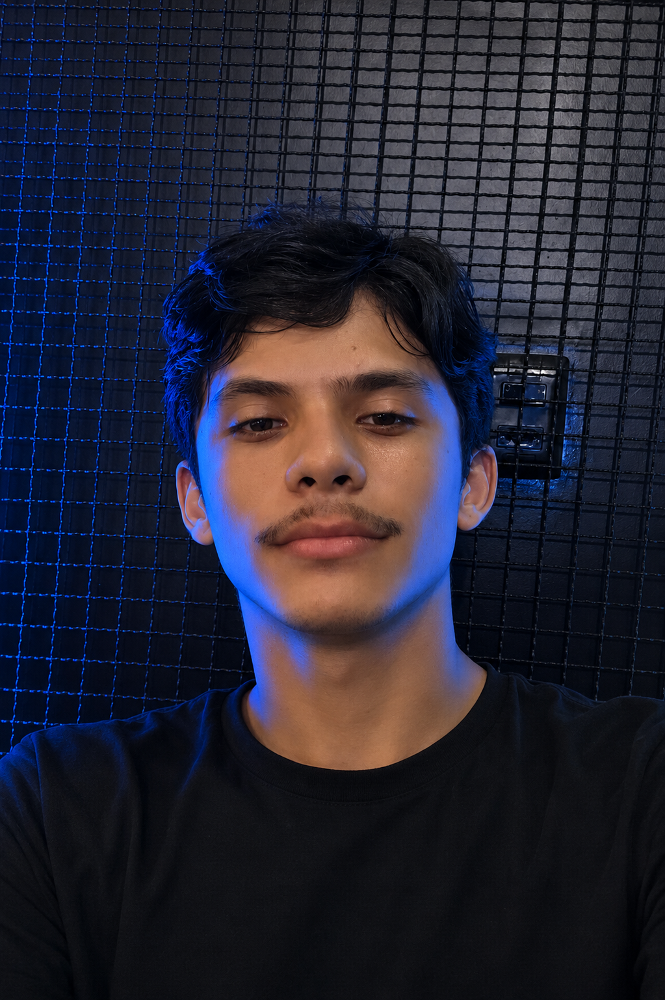

Sobre mim
Olá! Meu nome é Yuri, tenho 25 anos e moro em Imperatriz, no Maranhão. Atualmente estou cursando Análise e Desenvolvimento de Sistemas e dedico grande parte do meu tempo aos estudos, buscando desenvolver conhecimentos e habilidades na área de tecnologia. Tenho interesse em diversas áreas da computação, mas a que mais desperta minha atenção é a Cybersegurança. Gosto de entender como sistemas funcionam, aprender sobre proteção de dados e acompanhar as práticas utilizadas para garantir a segurança das informações em ambientes digitais. Nos momentos de lazer, gosto de jogar videogame, ouvir música, assistir filmes e continuar aprendendo sobre programação, especialmente utilizando a linguagem Java. Acredito que a dedicação constante aos estudos e à prática é fundamental para o crescimento profissional e para a construção de uma carreira sólida na área de tecnologia.
